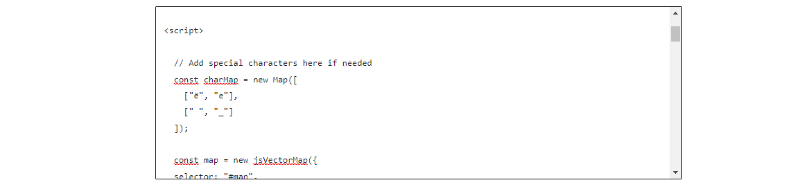

Created: 25/05/2023 | Last Update: 25/05/2023
In order to manage the team members we need to go to the dashboard of the WordPress website. This can be found on the following link: https://ananau.org/wp-admin/. Here you can log into your account. If you don't already have an account, please contact Ellen Bosh or Gilmourd Cardeña Pérez. They can create an account for you.
In the sidebar on the left, you will find multiple tabs to choose from. We are interested in the Participants, Partners and Countries tabs. In order to correctly add a new involved country, we will need to add potentional participants and partners first. If the new country doesn't have any participant or partners, skip to Add a country.
The first step is creating a participant. Participants can be:
To add a participants, from the dashboard go to the participants tab. Press on "Add New" on the top of the page. Here you can fill in all the necessary properties.
The page title will be used as the name of the participant.
Select the function of the participant within the organisation from the dropdown.
A picture of the participant. It is recommended that the face of the participant is visible.
The quote is a small text that will be shown on the participant. This can be something he/she said during the stay or an experience he/she had. This is optional and will not be shown on the page when left empty.
This is a link to a youtube video where the participant talks about his/her experiences during the stay. This is optional and will not be shown on the page when left empty.
As the participants follow the same principles as blog posts there are a few things to keep in mind.
On the page where all the participants are listed, you navigate to the participant you want to edit and click "edit". You will be redirected to a new page with the wordpress editor. On this page you can update all the properties needed.
Make sure to update the properties in all the available languages.
To delete a participant, search it in the list and press "Trash". This will move the participant to the trash, where it will be archived for 30 days. When you unintentionally delete a participant, you can recover it in the 'trash' tab.
Make sure to delete the participant in all the available languages.
Partners are organisations that support Añañau. Managing partners is the same proces as managing participants (Instructions are here). The only difference is the available properties, which are listed below.
In the partners, the page title is not used as the name of the partner. There is a seperate field provided for the organisation name.
This is the name of the organisation and is shown on the website.
This is a link to the website of the organisation. People can use this to navigate to their website.
Partners share their names in different languages. This means that you don't have to add the partners in different translations.
Managing Countries is the same proces as managing participants (Instructions are here). The only difference is the available properties, which are listed below.
In the country, the page title is used as the name of the country that apears in the tab on top of the browser.
The slug of the country is very important and we will need it later on within the . When assigning a slug to the country make sure that it is the same as the "Display Name" and the following requirements are met:
Belgium
belgium
United Kingdom
united_kingdom
Italië
italie
Côte d'Ivoire
cote_divoire
In this section you can select the participants and partners from the country you are creating. These particpants and partners are shown on the country page.
This is the display name of the country. This will be used as the name on the country page.
This is a text of more or less two paragraphs that gives the visiter some information about the country.
This section provides fields for 4 facts about the country. This can be anything you want, the only rule is that the value should be very short or a number. This is used on the country page below the about text. Popular facts are: population, total area, gdp...
The featured image is the banner of the country. This image is shown on the country page. It is recommended to chosse an image where the country is recognizable.
To correctly display the country pages on the website, you must insert the correct display language. When creating/editing the english version of the country, please select English. The same goes for Dutch or Español. Without the display language selected, there is a possibility that the information is not shown correctly.
As the countries follow the same principles as blog posts it's important to add the country in the available languages. It is recommended to completely create a country in one language. When creating a the country in another language by pressing the + next to the flag, most of the properties will then be transfered.
Now that the country has been succesfully created, the last step is adding the country to the map. In the pages section of the dashboard, in the 'Involved Countries' folder you will find Map and Map - NL. The next step is a little technical, so make sure to follow the instructions closely.
The first step is adding the country as a marker on the map. Press Enter after the last colon and paste this example { name: '<Country name>', coords: [<latitude>, <longitude>] }, into the markers. Change the values to the ones of the new country, you can find the latitude and longitude via latlong.net.
The second step is adding the line on the map between the newly created country and Peru. Press Enter after the last } you find before ] and paste this example { from: '< Country name >', to: 'Peru' }, into the lines. Change the values to the ones of the new country, you can find the latitude and longitude via latlong.net.
When there is a special character in the name of the country, for example ë, You must add this to the special characters. To do this scroll to the top of the map code until you find // Add special characters if needed. You can see that there are already a few special characters in there. If the new country contains any of the ones present, skip this step. To add a new special character, simply Enter after the last colon and paste the following example ["<Special character>", "<replacement>"],. Change the values and you're good to go!
When everything is done correctly you should now see the country on the interactive map (Check it out). You should be able to click on the marker to get redirected to the automatically created country page with all the information.